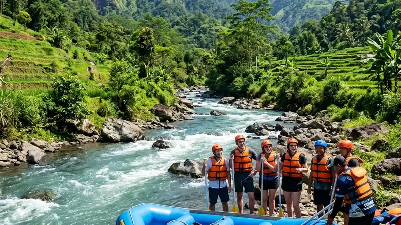

Lokasi rafting Kaliwatu berada di Pandanrejo, Kecamatan Bumiaji, Kota Batu, Jawa Timur, dengan akses yang relatif mudah dari pusat Kota Batu maupun Kota Malang.
- Basecamp Kaliwatu Rafting terletak di kawasan Bumiaji, Kota Batu, tidak jauh dari Taman Rekreasi Selecta.
- Perjalanan dari Kota Malang umumnya membutuhkan waktu sekitar 45 menit hingga satu jam.
- Rute dari Kota Batu dapat ditempuh melalui arah Selecta atau Cangar.
- Kawasan sekitar Kaliwatu berdekatan dengan beberapa destinasi wisata populer lain di Kota Batu.
Di Mana Lokasi Rafting Kaliwatu?
Lokasi rafting Kaliwatu berada di kawasan Pandanrejo, Kecamatan Bumiaji, Kota Batu, Jawa Timur, di sepanjang aliran Sungai Brantas.
Kawasan Bumiaji dikenal sebagai salah satu wilayah di Kota Batu yang memiliki kontur pegunungan dengan udara sejuk, sehingga banyak operator wisata alam dan outbound berdiri di area ini. Basecamp rafting umumnya berada tidak jauh dari jalur menuju Taman Rekreasi Selecta, salah satu destinasi wisata populer lain di kawasan Batu.
Posisi ini membuat lokasi rafting Kaliwatu relatif mudah dijangkau baik dari pusat Kota Batu maupun dari Kota Malang, karena berada pada jalur wisata yang sudah cukup familiar bagi wisatawan yang sering berkunjung ke kawasan pegunungan Batu.
Bagaimana Rute Menuju Rafting Kaliwatu dari Kota Batu?
Rute menuju rafting Kaliwatu dari pusat Kota Batu dapat ditempuh melalui arah Taman Rekreasi Selecta atau Cangar dengan mengikuti petunjuk jalan menuju Bumiaji.
Dari Alun-Alun Kota Batu, perjalanan dapat dimulai dengan mengarahkan kendaraan menuju perempatan BCA, kemudian belok ke arah Taman Rekreasi Selecta atau Cangar. Setelah melewati pertigaan berikutnya, wisatawan dapat mengambil arah menuju Karangploso, di mana lokasi basecamp berada tidak jauh dari titik tersebut.
Rute ini umumnya dapat ditempuh dalam waktu sekitar 15 hingga 20 menit berkendara dari pusat Kota Batu, tergantung kondisi lalu lintas dan cuaca di kawasan pegunungan tersebut.
Bagaimana Rute Menuju Rafting Kaliwatu dari Kota Malang?
Rute menuju rafting Kaliwatu dari Kota Malang umumnya ditempuh melalui jalur menuju Karangploso sebelum melanjutkan perjalanan ke arah Bumiaji.
Bagi wisatawan yang berangkat dari pusat Kota Malang, termasuk dari area Stasiun Malang, perjalanan menuju lokasi rafting dapat ditempuh melalui beberapa alternatif jalur menuju Karangploso dan Bumiaji. Total jarak tempuh dari Kota Malang menuju kawasan ini berkisar sekitar 20 hingga 25 kilometer, dengan estimasi waktu tempuh sekitar 45 menit hingga satu jam menggunakan kendaraan roda dua maupun roda empat, tergantung kondisi lalu lintas.
Bagi wisatawan yang tiba melalui Bandar Udara Abdul Rachman Saleh, rute menuju lokasi juga dapat ditempuh melalui jalur yang sama menuju Karangploso, dengan estimasi waktu tempuh yang relatif serupa.
Apa Saja Wisata Terdekat dari Rafting Kaliwatu?
Wisata terdekat dari rafting Kaliwatu antara lain Taman Rekreasi Selecta, Jatim Park, Museum Angkut, dan Coban Rondo, yang semuanya berada di kawasan Kota Batu.
Kedekatan lokasi rafting Kaliwatu dengan beberapa destinasi populer ini memudahkan wisatawan menyusun agenda kunjungan dalam satu hari. Sebagian wisatawan bahkan memadukan agenda rafting dengan wisata kuliner di sekitar tepi sungai atau kawasan pusat Kota Batu setelah trip selesai, sebagai penutup perjalanan sebelum kembali ke penginapan.
Kombinasi antara aktivitas air yang menantang dan destinasi wisata keluarga di sekitarnya menjadi salah satu alasan kawasan Bumiaji cukup ramai dikunjungi, khususnya pada akhir pekan dan musim liburan sekolah.
Apa yang Perlu Diperhatikan Saat Menuju Lokasi Rafting Kaliwatu?
Hal yang perlu diperhatikan saat menuju lokasi rafting Kaliwatu antara lain kondisi jalan pegunungan yang berkelok, cuaca yang dapat berubah, dan waktu tempuh yang perlu diperhitungkan agar tidak terlambat.
Beberapa catatan penting bagi wisatawan yang akan berkendara menuju kawasan ini:
- Jalan menuju Bumiaji memiliki kontur berkelok dan menanjak khas kawasan pegunungan, sehingga disarankan berkendara dengan kecepatan yang aman.
- Cuaca di kawasan Batu dapat berubah cukup cepat, terutama pada musim hujan, sehingga sebaiknya berangkat lebih awal untuk mengantisipasi keterlambatan.
- Sebaiknya konfirmasi kembali alamat dan titik basecamp melalui kontak resmi operator, mengingat terdapat beberapa operator rafting yang beroperasi di kawasan Kaliwatu.
FAQ
Di mana tepatnya lokasi rafting Kaliwatu?
Lokasi rafting Kaliwatu berada di kawasan Pandanrejo, Kecamatan Bumiaji, Kota Batu, Jawa Timur.
Berapa jarak rafting Kaliwatu dari Kota Malang?
Jarak dari Kota Malang berkisar sekitar 20 hingga 25 kilometer dengan waktu tempuh sekitar 45 menit hingga satu jam.
Apa saja destinasi wisata terdekat dari rafting Kaliwatu?
Destinasi terdekat antara lain Taman Rekreasi Selecta, Jatim Park, Museum Angkut, dan Coban Rondo.
Arya
Siswa Skariga yang sedang belajar di Gm Academy.